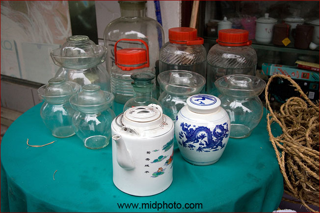

沅江市。鄙人觉得在通市电的地方搞太阳能纯属装B。也难怪，反正不花自己的钱。

望城县铜官运政管理处后门

洞庭湖渔舟的动力

西洞庭湖


厂窖惨案纪念馆。在这晃了一个小时，小言和我是唯一的游客。二楼陈列室锁着门，收费两元。看门的老太要我在参观本上签名，我顿时大惊，俺可不是什么名人。原来没有收据和门票，签名算收据。老太说只签一个人的名字即可。交了两个人的钱为啥只算一个人？难道这点钱也要贪污？
老太见我拿着大相机就说不准拍照，除非另外交钱。我很不爽。在二楼陈列室看了看，只有现代人根据回忆的绘画，没有多少真凭实据啊，那些尸骨没有陈列，只有两张模糊的死人坑照片。我觉得要赶紧加大挖掘力度，没有证据怎么行。受害人访谈不能只有文字和照片，要赶紧重新录像，那些当年的老人很快就会都没了。

南县猪肉的运输


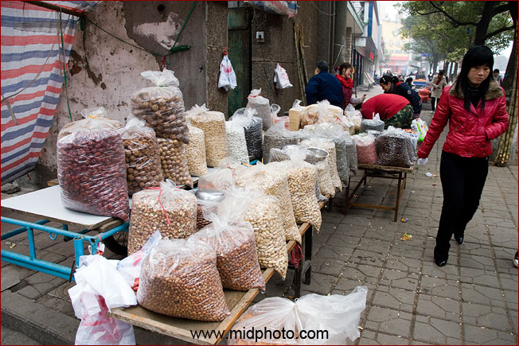
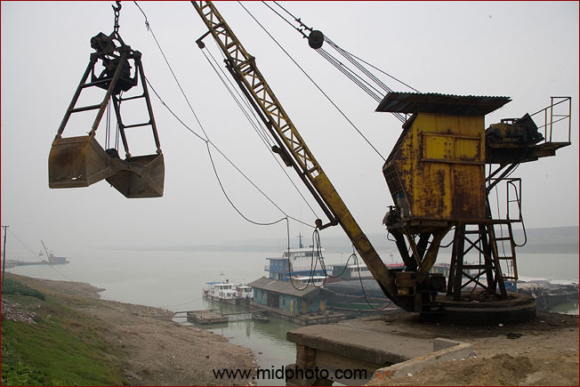
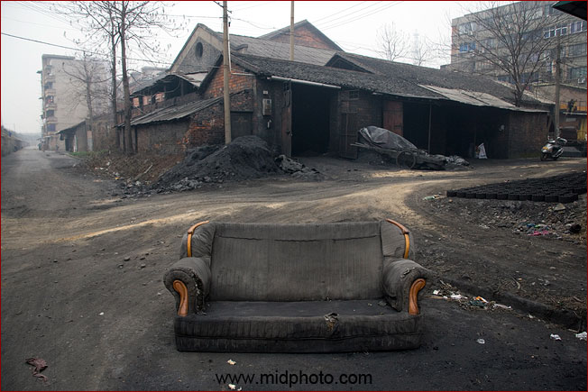
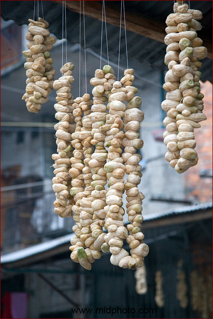
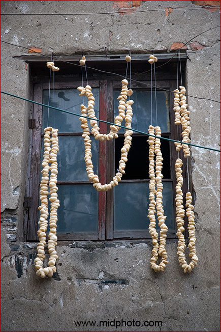
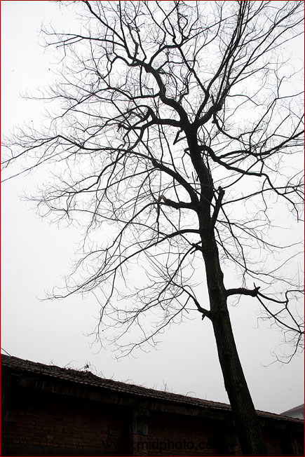
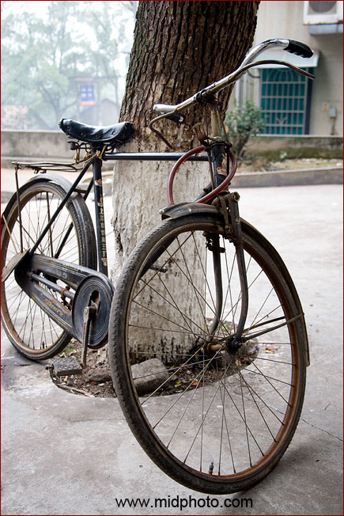
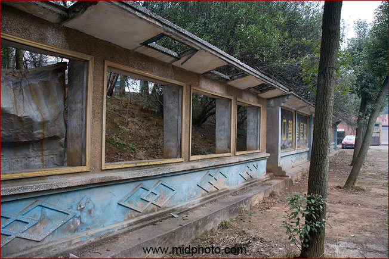
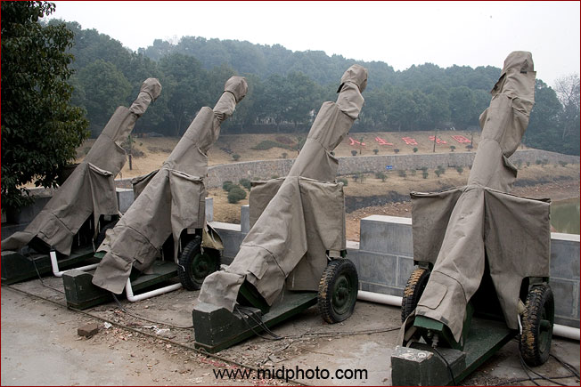
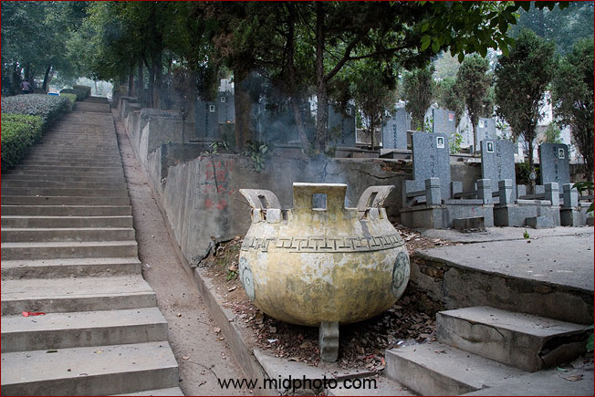
香炉有点残破了。不知道这些墓碑能保存多少年。既然百年之后都不复存在，那把自己的骨灰供在这里有什么含义呢？死人不应该和活人争地。我决定死后不留骨灰，当做肥料种树，发挥最后一点余热。
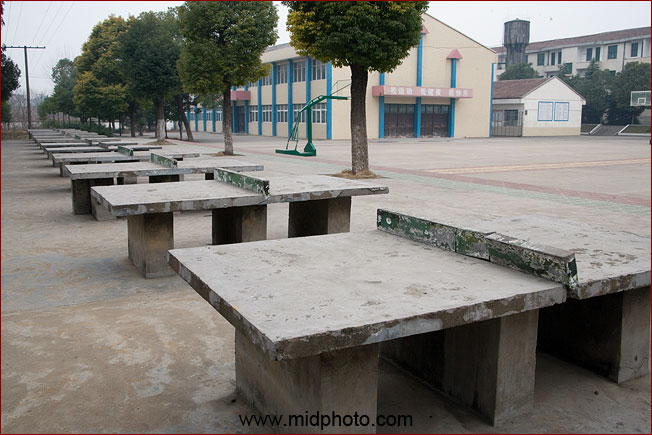
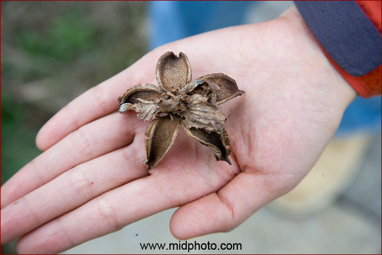
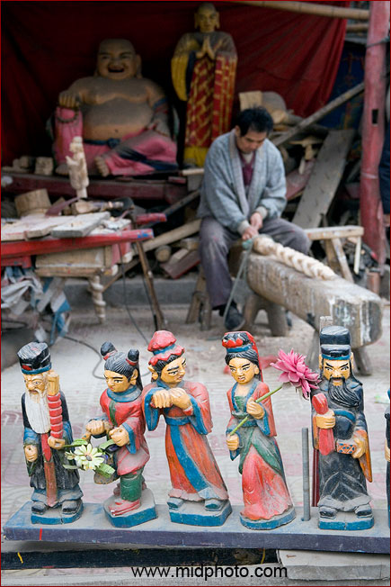
津市火葬场附近遇到一个木雕师傅
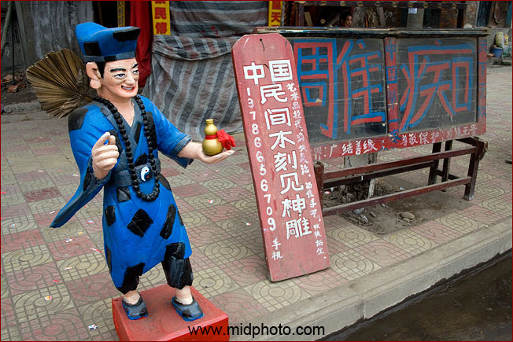


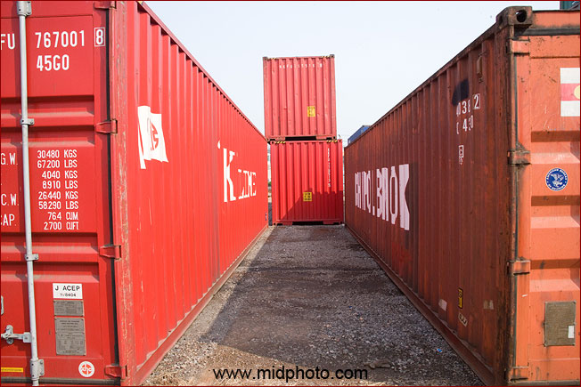
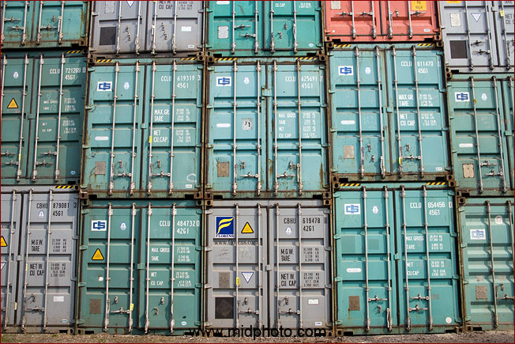


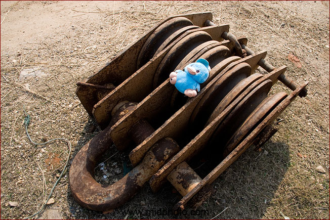
小鸭子是我的旅行吉祥物
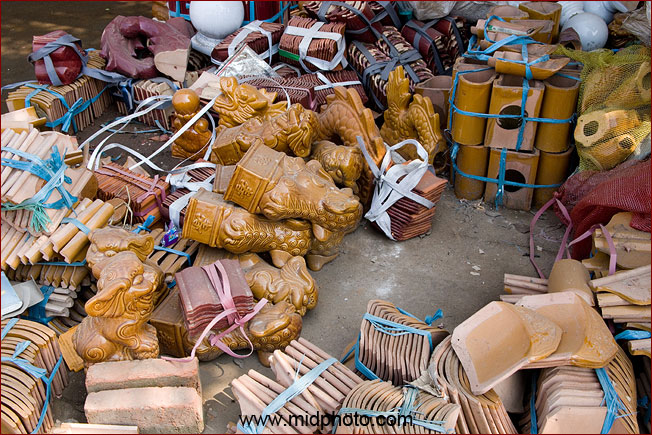
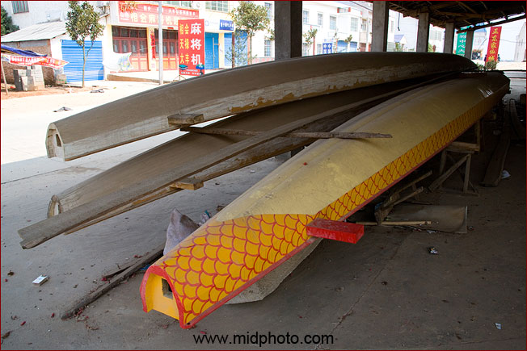


屈子祠废弃的德育基地